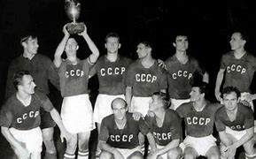
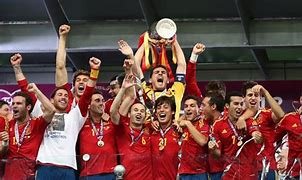
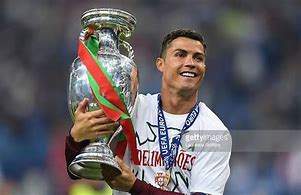

Click aqui para volver al inicio
8.Eurocopa
La Eurocopa se fundo en 1960 con sede en Francia saliendo como vencedor la URSS

La Selección de España es la máximo ganadora del torneo con un total de 4 triunfos

El máximo goleador del torneo es Cristiano Ronaldo con un total de 14 tantos
